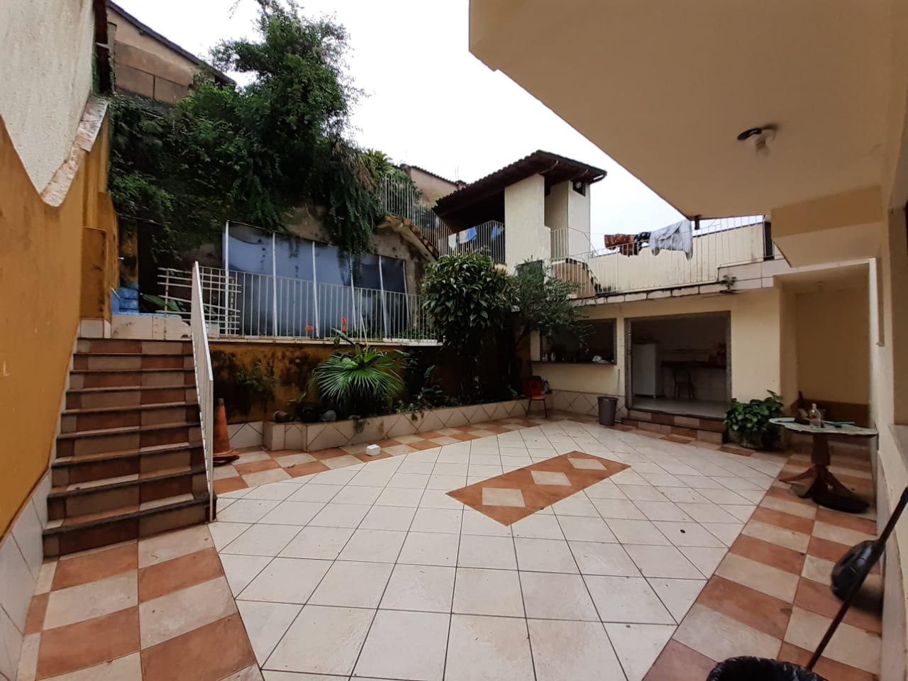
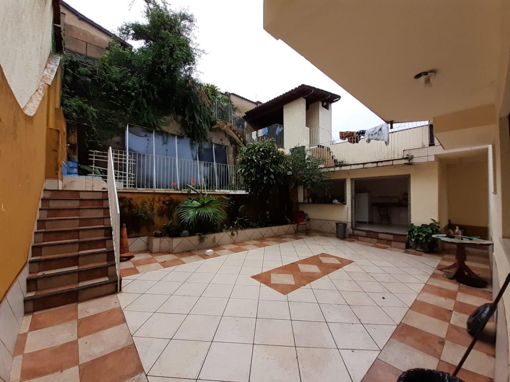
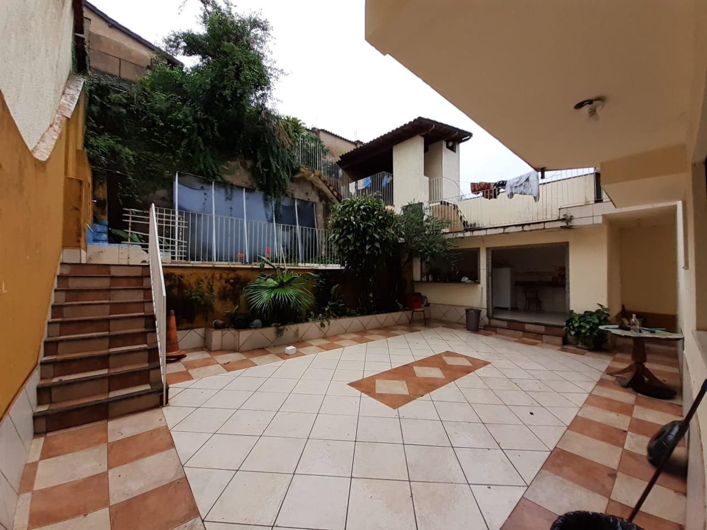

A nossa casa está localizada em um dos bairros nobres de Itabira, com rede de vigilância e câmeras espalhadas pelo bairro. Além de estar perto de mercados, padarias, academias, pontos de ônibus, SAMU, bombeiros, posto de saúde, postos de gasolina, bares, restaurantes, lanchonetes, lotéricas e hortifrutis.
A Viracopos possui 3 andares com

Aqui na Viracopos, todos os quartos vêm equipados com o básico: cama com colchão, armários espaçosos para suas roupas, mesa e cadeira. A melhor parte é que você não precisa se preocupar em comprar móveis novos, pois temos tudo o que você precisa para começar.
EÉ importante mencionar que nossos móveis são usados, incluindo o colchão, mas estão em ótimo estado e prontos para uso. No entanto, a decisão de comprar um colchão novo é totalmente sua. Não é necessário fazê-lo no primeiro ano, mas muitos de nossos residentes acham que é uma ótima maneira de tornar seu espaço ainda mais confortável enquanto passam pelos anos de graduação.
Quanto a roupas de cama e travesseiros, esses são itens pessoais que cada morador deve trazer consigo. Afinal, o conforto do seu sono é algo muito particular, e queremos que você se sinta à vontade para personalizar seu espaço da maneira que preferir.


Aqui em casa é feito a compra comum da casa e é tudo incluído nas contas. É comprado todo o material de limpeza, higiene (papel higiênico e pasta de dente) o grosso da feira, saladas, ração para os cachorros e materiais para manutenção da casa. Tudo isso é dividido igualmente no final de cada mês nas contas. Na compra da casa não está incluído a mistura de cada um, pois nem todos comem fígado por exemplo, então você compra sua carne, laticínios, pães, frutas e biscoitos de forma individual. Na geladeira, cada um tem seu espaço de armazenamento e é recomendado guardar coisas como biscoitos e miojos no quarto para evitar a confusão e pegar por engano, mas caso aconteça, pode avisar que quem pegou sempre repõe. Sem brigas!
Essa festa é realizada no início do semestre e ela é totalmente voltada para os calouros. É uma festa para os calouros conhecerem os rostos das pessoas que vão conviver ao longo do seu período em Itabira. São amizades que você vai levar para o resto da vida, ajudar durante o curso, matérias, e lalalala
Anualmente nós somos os inauguradores da semana federal, a primeira festa do ano. Certos anos, dependendo do financeiro da casa, fazemos também o tradicional baile Viratron. Nas nossas festas TODOS os moradores trabalham igualmente do inicio ao fim, e está sujeito a trote caso não ajude, todos devem cuidar da casa.
Esses roles servem para criar caixa na casa, todo o lucro é revertido em melhorias para casa, compra de TV, reformas, manutenção (como pintura), consultas veterinárias, enfim, o dinheiro é sempre usado para melhorar a casa.
Mas somos fãs de carteirinha de um churrasco e tomar uma cerveja entre a gente e com as repúblicas amigas, e sempre o Rod, o Kekel e o Fofoca estarão em todas as festas. E se algo acontecer com você tipo passar mal, todo mundo da casa que tá na festa ou até mesmo as repúblicas amigas irão cuidar de você, somos uma família e ninguém fica pra trás. E caso queira espiar esse é o calendário de festas da UNIFEI 2023, só escanear o QR CODE.
Tá agora vamos falar da sua mudança pra cá, tá? Anualmente no início das aulas nos divulgamos 2 tipos de vagas, temporárias e fixas. E todo ano entram calouros novos (vamos chamar de bixos), porém mesmo a casa tendo um espaço grande, não da pra morar mais do que 12 pessoas. No período de adaptação é o momento que nos usamos para conhecer você, como lida com as coisas que acontecem na casa, como é sua comunicação com todo mundo, basicamente para saber se você faz o perfil da república e não surta com coisas simples do dia a dia. Não da pra viver com alguém que faz tempestade em copo d'água por 5 anos. Esse período custa R$350,00 com tudo incluso e dura de 1 a 2 meses. Após esse período é feito uma reunião com todos os moradores para saber como foi o seu período de adaptação com a casa. Dai são 2 opções, a gente vai te ajudar a achar um local bacana pra você ficar, que faça mais o seu perfil, ou você vira um Morador da Ninho do Urubu (barulhos de fogos). Essa escolha leva diversos fatores, e as vezes não da pra ficar com todo mundo por questão de vagas mesmo, ai selecionamos quem melhor se adaptou :(
Agora você vai saber como tudo aqui dentro funciona, em relação a contas e valores e tudo que está incluso
Tudo que você viu acima está incluso, além da agua, energia, internet de 750mb, assinatura do Xbox, IPTU, seguro incêndio, seguro da casa, caixinha da casa, salário da Terezinha, o aluguel e tudo que for gasto extraordinariamente na casa.
A conta é dividida igualmente entre os moradores. O gasto mensal gira em torno de x por mês na casa. No período de adaptação não há essa divisão nas contas para os bixos, para suavizar essa nova mudança. Sabemos como é caro, por isso o valor mensal fica em torno de R$350,00 por mês, não havendo alteração. Após o término do período de adaptação e a consagração como morador, sendo essa sua escolha, você entrará na divisão das contas da casa. No ano passado a média foi em torno de 650 a R$750,00 reais. Esse valor é variável dependendo do gasto do mês, mas fica tudo dividido igualmente
O dinheiro no caixa da casa é disponibilizado para todo mundo acompanhar através de uma planilha que todos devem saber como funciona, pois nela também é dado seu valor mensal! Porém o valor pode sofrer alteração, como disse o dinheiro é de todo mundo e você pode fazer pequenos empréstimos com a casa, como para pagar um rolê, participar de um churrasco mas tá sem dinheiro, e esse valor que você pega emprestado será adicionado a sua conta no final do mês.